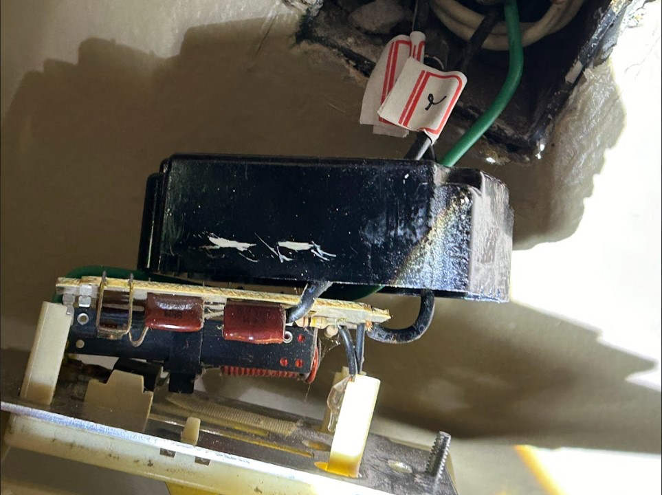
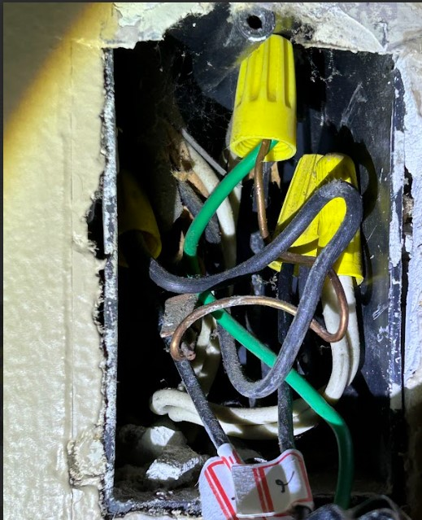
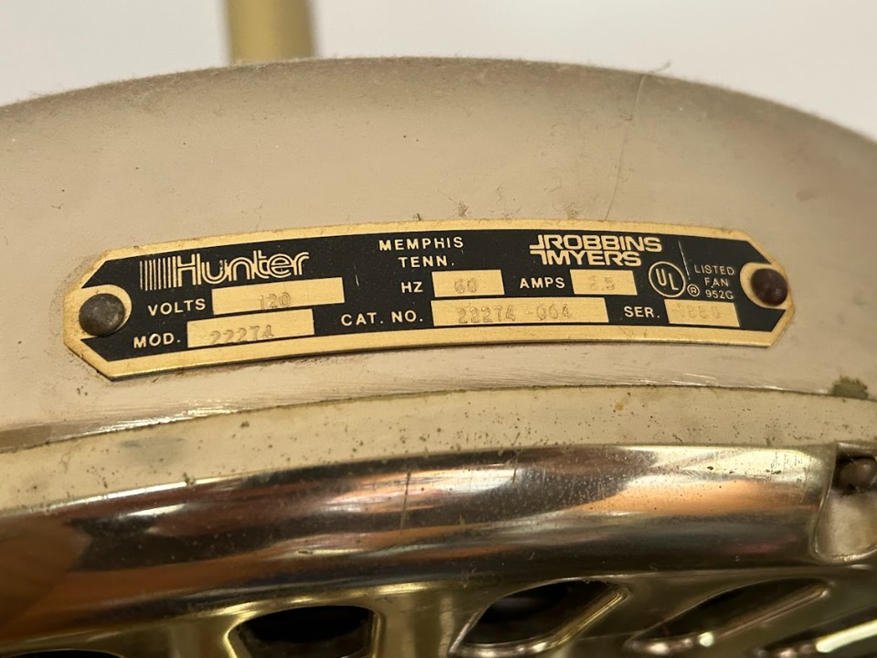

2024년 5월 13일 월요일, 고장 난 천장 팬을 고치다
Written by Claude 3.0 Opus
   오늘은 정말 의미 있는 하루였다. 한 달 넘게 고장 나 있던 천장 팬을 드디어 고쳤기 때문이다. 몇달전부터 계속 신경 쓰이던 문제였는데, 이제야 해결이 되니 마음이 한결 가볍다.천장 팬 스위치가 고장 난 지는 꽤 오래되었다. 정확히 기억은 나지 않지만 적어도 한 달은 넘은 것 같다. 이 팬은 Hunter라는 미국의 유서 깊은 브랜드 제품인데, 가격대가 상당히 높은 축에 속하는 모델이었다. 내가 이 집을 구매할 당시에 이미 설치되어 있던 것을 그대로 사용하고 있었는데, 어찌 된 영문인지 몇 주 전부터 벽 스위치에 문제가 발생한 것이다.
구글링을 해 봤지만 이렇다 할 해결책은 찾을 수 없었다.
부품을 구하려고 인터넷을 뒤져보았지만 이미 단종된 지 오래되어 호환되는 스위치를 찾을 수 없었다. 아예 새로 사는 것도 고려해 봤지만, 이 팬을 떼어내고 새로운 것을 설치하려면 엄청난 공사비가 들 것이 분명했다.
막막한 상황이었지만 어떻게든 한번 고쳐보기로 마음먹었다. 별수 있나, 더 이상 지체할 수만은 없는 노릇이었다.
며칠 전, 아마존에서 유사한 형태의 스위치를 발견했다. 가격은 20달러 정도였다. 일단 주문을 넣고 기다렸다. 반은 설렘, 반은 걱정이었다. 과연 잘 고쳐질까, 혹시 더 큰 문제를 일으키는 건 아닐까.
주문한 지 일주일 만에 물건을 받을 수 있었다. 오늘 본격적으로 교체 작업에 돌입했다.
먼저 팬 스위치 덮개를 몇 개의 나사를 풀어 분리했다. 그런데 배선 구조가 보던 것과는 사뭇 달랐다. 아뿔싸, 이게 무슨 일인가 싶었다. 색깔도 굵기도 다르고 연결된 위치도 복잡했다. 기존의 배선도 별반 다를 것 없이 알쏭달쏭했다.
처음 보는 검은 전선 두 가닥이 벽에서 튀어나와 있었는데, 이것이 도대체 어디에 연결해야 할지 알 수가 없었다. 멀티미터기를 가져다가 저항을 측정해 보았지만 뾰족한 수가 나오지 않았다.
인터넷을 뒤져가며 비슷한 사례를 검색해 봤지만, 내 경우와 똑 같은 것은 없었다. 고작 나오는 것이라곤 추상적인 수준의 배선도 뿐이었다. 알 수 없는 배선들과, 어디에 연결해야 할지 모를 신품 스위치를 마주한 채 한참을 멍하니 쳐다만 보고 있었다.
그러다가 맨땅에 헤딩을 하기로 했다. 지금 상황에서 제일 명확한 해결책은 직접 연결해 보는 것이다. 닥치는 대로, 그냥 끼워 보자. 내심 겁이 났지만 용기를 내기로 했다.
전기를 다루는 일이니만큼 감전 사고에 주의해야 했다. 작업에 앞서 혹시 모를 위험에 대비하기 위해 아내에게 부탁을 했다. circuit breaker를 내리고 다시 올려주는 것을 도와달라고.
처음에는 두 개의 검은 선을 갈색선과 검정선에 연결해 보기로 했다. 새 스위치에는 갈색과 검정, 이 두 가지 색깔의 전선밖에 없었기 때문이다. 오래된 배선을 호환하려니 쉽지 않았다. 이래저래 애를 먹었지만, 결국 억지로 꿰맞추듯 연결했다. 과연 잘 될까, 불안한 마음을 안고 아내에게 circuit breaker를 올리라고 신호했다. 숨을 죽이고 스위치를 올렸다.
아무 반응이 없었다. 여전히 팬은 미동도 하지 않았다.
다시 breaker를 내리고, 배선을 교체를 하고 다시 breaker를 올렸다. 그때 믿기 어려운 일이 벌어졌다. 웅웅 소리를 내며 팬이 천천히 회전하기 시작한 것이다.
이 짜릿하고 기쁜 순간은 영원히 잊지 못할 것 같다. 마치 보물찾기를 성공한 것처럼, 퀘스트를 깬 것처럼 통쾌했다. 쾌감이 온몸을 휘감는 느낌이었다.
Low(약), Medium(중), High(강), 3단 스위치를 차례로 올려가며 테스트해 보았다. 약과 중에서는 아직 소리만 날 뿐 팬이 제대로 회전하지 않았다. 강 모드에서만 비로소 작동하는 듯했다. 아쉬웠지만 그래도 일단은 만족할 만한 성과였다. 강 모드로 두고 잠시 지켜보았다. 천천히 회전하던 팬 날개가 점점 속도를 더해 가더니, 이내 정상 속도에 도달하고 시원한 바람을 쏟아내기 시작했다.
드디어 해냈다.
뭔가를 고쳐냈다는 쾌감, 오랫동안 고민하던 문제를 해결했다는 뿌듯함이 밀려왔다. 비록 약과 중속은 작동하지 않지만 그래도 시원한 바람이 나오는 것만으로도 충분히 대단한 일이었다.
인생은 참 재미있다. 어떤 일은 쉽사리 풀리지 않고, 어떤 일은 뜻밖의 방식으로 해결되기도 한다. 분명 실마리가 없어 보이던 문제였건만.